Frenata rigenerativa
La frenata rigenerativa è quel comportamento di un motore elettrico in cui si converte l'energia cinetica accumulata nella rotazione in energia elettrica che è possibile rimandare all'accumulatore e riutilizzare. L'implementazione di questa tecnologia ci permette di estendere la vita di un ciclo di ricarica della batteria nella vettura e logicamente aumentare la strada percorribile.
In questo documento analizzerò:
- Le modalità in cui il motore riesce a convertire energia cinetica in energia elettrica ad alto voltaggio
- La compatibilità delle schede di sicurezza con una tensione/corrente inversa
- L'impatto che la frenata rigenerativa avrà sullo svolgimento della gara
- L'impatto che la frenata rigenerativa avrà a lungo termine sulla vita utile delle celle componenti della batteria
Fisica della rigenerazione e controllo vettoriale (FOC)
Per capire come la vettura riesca a ricaricare le batterie dobbiamo guardare all'interno dell'inverter, in particolare analizzando modo in cui manipola i campi magnetici presenti all'interno del motore attraverso il Field Oriented Control.
In un motore trifase (indipendentemente dal fatto che esso sia sincrono o asincrono), le correnti che attraversano gli avvolgimenti dello statore creano un campo magnetico rotante. Per controllare la rotazione e l'intensità di questi campi magnetici si utilizzano due trasformazioni matematiche che semplificano l'analisi e la manipolazione delle forze in gioco: Trasformata di Clarke e la Trasformata di Park.
Trasformata di Clarke
La trasformata di Clarke prende le tre correnti alternate reali sfasate di \(120°\) (\(I_{a}, I_{b}, I_{c}\)) e le proietta su un piano cartesiano a due assi \(\alpha\) e \(\beta\).
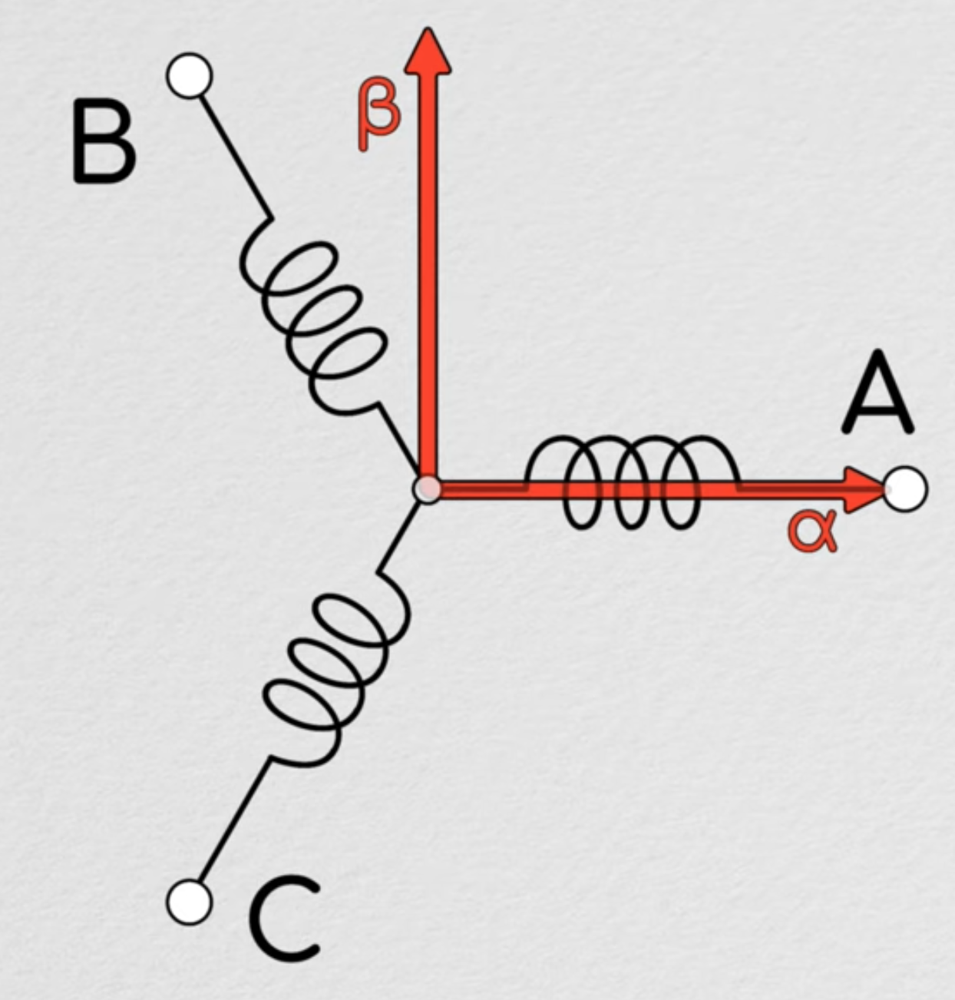
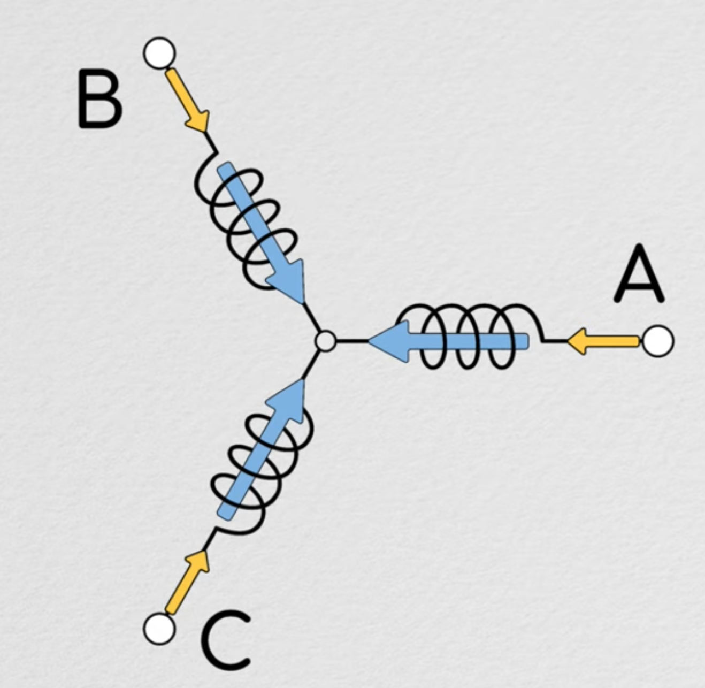
La trasformazione è definita come
Il problema di questa rappresentazione è che i vettori del campo magnetico e della corrente che abbiamo plottato sul piano a due assi dovrebbero ruotare seguendo il campo magnetico reale del motore, obbligandoci a cambiare continuamente le componenti. Qui entra in gioco l'altra trasformata.
Trasformata di Park
La trasformata di park prende il piano \(\alpha\)-\(\beta\) ottenuto dalla trasformazione precedente e gli applica una matrice di rotazione, facendolo attorno all'asse del motore con velocità sincrona e rinominando i due vettori: - Il primo detto vettore di quadratura \(I_{q}\), che, essendo perpendicolare al campo magnetico del motore, genera la coppia. - Il secondo detto vettore di magnetizzazione o diretto \(I_{d}\), che viene utilizzato solo per creare il campo magnetico all'interno dello statore e solitamente ha modulo 0
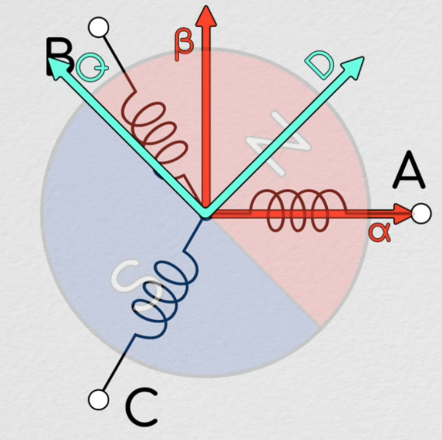
La trasformazione è definita applicando una semplice matrice di rotazione ai vettori presenti nel piano precedente
La ragione per cui queste trasformate sono utili è il fatto che semplicemente controllando questi due vettori si può controllare il comportamento di un motore elettrico, agevolando l'utilizzo di strumenti di teoria del controllo come i controllori PID per mantenere un obiettivo di coppia o le analisi su software di simulazione come Simulink.
Sfasamento vettoriale in frenata
Durante l'accelerazione l'inverter inietta una \(I_{q}\) positiva, il che vuol dire che il campo magnetico dello statore precede il campo magnetico generato dai magneti permanenti del rotore, trascinandolo e generando coppia motrice.
Quando la ECU richede una coppia negativa all'inverter, lui inverte soltanto il vettore \(I_{q}\), mantenendo \(I_{d}=0\). A livello magnetico, il vettore di campo dello statore viene sfasato all'indietro rispetto al campo del rotore. Questo crea una coppia frenante. Così facendo, il motore si trasforma in un generatore. Il rotore in movimento taglia le linee di flusso dello statore, inducendo nelle spire una forza elettromotrice detta Back-EMF.
Dato che la potenza vale
Assumendo di avere sempre \(I_{d}= 0\) e nessun indebolimento o rafforzamento di campo possiamo semplificare la potenza come
Se imponiamo una corrente di quadratura negativa avremo necessariamente una potenza negativa.
Chiarimenti
Quando si utilizzano i termini "iniettare" o "imporre", si potrebbe pensare che si debba consumare energia proveniente dalla batteria per generare il campo magnetico opposto. In realtà quello che succede e che le linee di campo del rotore si infrangono sugli avvolgimenti dello statore, con la conseguenza di generare una altissima tensione indotta sull'avvolgimento stesso. Se gli avvolgimenti non sono collegati a nulla quella tensione resta imprigionata all'interno del rame e va in saturazione, senza generare più energia o coppia frenante.
Per fare in modo che la corrente venga effettivamente passata alla batteria, l'inverter utilizza il setpoint negativo per commutare i mosfet all'interno del ponte ad H trifase, dando una via di fuga alla corrente indotta negli avvolgimenti.
Secondo legge di Lenz, la corrente indotta in un avvolgimento genera un altro campo magnetico che cerca di opporsi in tutti i modi al movimento che l'ha generata, che è la rotazione del rotore. Per questo motivo si genera una forza meccanica detta coppia frenante.
Conversione da AC a DC
Una volta che il motore, agendo da generatore, inizia a produrre forza elettromotrice trifase in corrente alternata, va raddrizzata in corrente continua per essere immagazzinata dalla batteria. Questo è un compito assegnato all'inverter.
All'interno dell'inverter è presente un componente elettronico chiamato ponte trifase, composto da 6 transistor di potenza in parallelo ad un diodo che normalmente è polarizzato inversamente detto freewheeling diode.
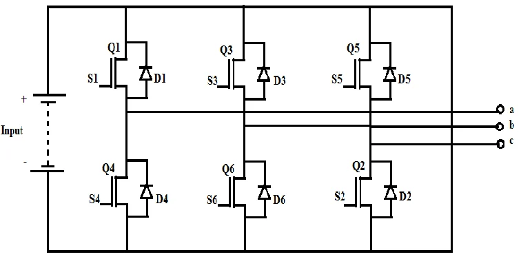
Quando il motore gira liberamente e la tensione sull'avvolgimento supera la tensione del DC bus, i diodi entrano in conduzione e si comportano come un normale ponte di Graetz trifase. La corrente alternata viene raddrizzata passivamente e immagazzinata nella batteria. Il problema è che facendo così non si ha nessun controllo sulla corrente che torna indietro. La forza frenante dipenderebbe esclusivamente dalla velocità della macchina in quell'istante e si avrebbe una frenata brusca e non controllabile.
Dissipazione di potenza
Il Diodo Ha sempre una caduta di tensione fissa, di circa \(0.7\text{V} - 1.2\text{V}\). Se si rigenera a 100A, il diodo dissipa \(P = V_f \cdot I = 1\text{V} \cdot 100\text{A} = 100\text{W}\) di calore. Si fonde. Il MOSFET o IGBT quando viene chiuso attivamente, ha il canale che si comporta come una resistenza bassissima (\(R_{DS(on)}\)), ad esempio \(0.005\text{ }\Omega\).
Attivando i transistor con impulsi rapidissimi (PWM), l'inverter parzializza questo flusso, costringendo la corrente a seguire esattamente il setpoint \(I_{q, ref}\) richiesto dalla ECU per ottenere la coppia frenante perfetta. Poiché il MOSFET e il suo diodo sono fisicamente in parallelo, se si commuta il MOSFET mentre il diodo sta già conducendo, la corrente smette di passare per il diodo e passa per il canale del transistor. Questo trucco si chiama Raddrizzamento Sincrono e ci permette di recuperare più energia senza bruciare l'inverter.
Step up a basse velocità
La tensione generata dal motore (indicata con \(E\)) è direttamente proporzionale alla sua velocità di rotazione meccanica \(\omega\), secondo la formula: \(E = k_e \cdot \omega\).
Se la batteria è a 400V e il motore sta girando piano generando solo 200V, i diodi sono polarizzati inversamente. Sono dei muri di cemento. La corrente è bloccata, zero rigenerazione. L'unico modo per superare la tensione della batteria per poterla ricaricare è pilotare i mosfet per mettere in corto gli avvolgimenti, caricando l'induttanza. Per la proprietà dell'induttore di mantenere una corrente costante, quando si riaprono la tensione si impenna superando i 400V. Tutto con questa precisa sequenza di azioni:
- L'inverter chiude brevemente i transistor inferiori, mettendo letteralmente le fasi del motore in corto circuito controllato.
- In questa frazione di millisecondo, la corrente sale e si accumula energia magnetica nell'induttanza naturale degli avvolgimenti di rame del motore.
- Quando l'inverter riapre improvvisamente i transistor, l'induttore si oppone al taglio di corrente generando un picco di sovratensione altissimo.
- Questo picco somma la sua energia alla Back-EMF debole, superando agevolmente i 400V della batteria e pompando la carica al suo interno, permettendoci di rigenerare energia fin quasi all'arresto completo del veicolo.
Problema UGO
In una discesa incontrollata o in qualsiasi occasione in cui i giri motore salgano in maniera incontrollata, il motore inizia a generare 450V. In questa situazione i diodi superano il muro della batteria ed entrano violentemente in conduzione senza che gli sia stato chiesto. Una valanga di corrente non filtrata si riversa dal motore alla batteria. Questo genera una coppia frenante brutale, improvvisa e totalmente incontrollata dalla VCU, che rischia di bloccare le ruote e distruggere l'accumulatore. In ingegneria, questo scenario da incubo ha un nome preciso: UGO (Uncontrolled Generator Operation).
È considerato un guasto catastrofico. Per evitarlo, i powertrain ad altissime prestazioni prevedono dei contattori tra inverter e motore per "staccare i cavi" in caso di sovravelocità, oppure progettano il sistema in modo che la velocità meccanica per generare UGO sia fisicamente irraggiungibile in pista.
Compatibilità hardware
DC Bus Voltage - Importante
Durante la frenata rigenerativa, il voltaggio nel DC Bus non diventa negativo, è solamente la corrente a cambiare verso. Se diventasse davvero negativo tutti i diodi si troverebbero polarizzati direttamente e l'inverter esploderebbe.
In questa sezione andremo ad analizzare ogni scheda di sicurezza per capire se accetta cuna corrente al contrario.
BSPD
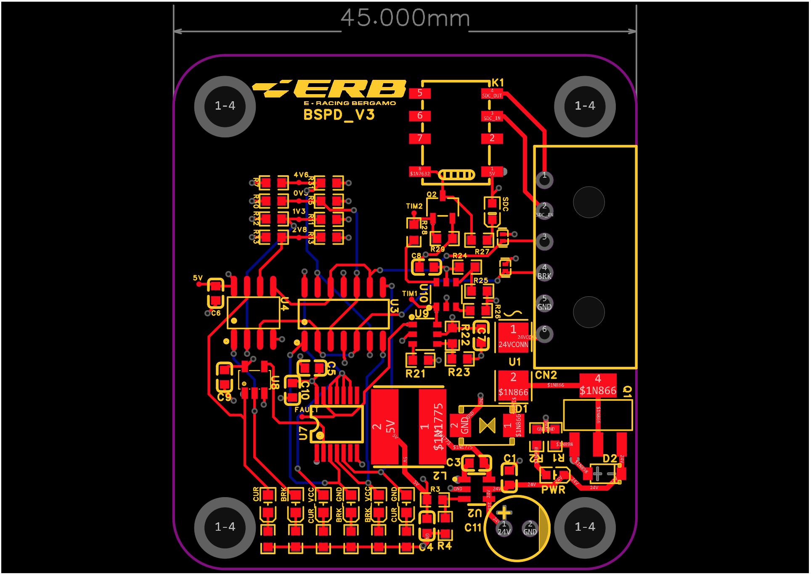
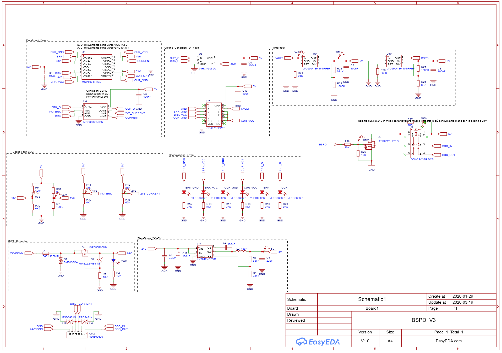
Il BSPD (Brake System Plausibility Check) deriva da una regola FSAE che stabilisce che bisogna aprire il circuito di spegnimento o SDC se si verificano contemporaneamente per più di 500ms due condizioni:
- Frenata violenta (Hard Braking).
- Alta potenza erogata verso i motori > 5kW.
Le due condizioni sono controllate dall'operazionale U4 (MCP6002), riportato in grande qua sotto.
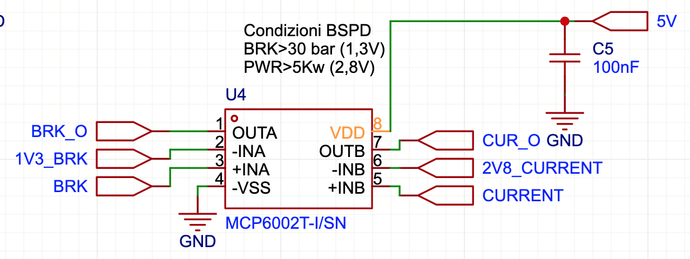
Questo piccolo oggettino controlla che entrambi i segnali non superino la soglia impostata, per il freno sono 1,3V sul pin 2, per la corrente 2,8V sul pin 6. In caso di riscontro positivo vengono attivate le uscite dei pin 1 e 7.
Le due uscite vanno direttamente allo stadio successivo che si occupa di fare i check logici e interagire con l'sdc. Il chip 74HC1G08GV è una semplicissima porta logica AND.
- I suoi due ingressi sono
CUR_O, che arriva dal comparatore dei 5kW eBRK_O, che arriva dal comparatore dei 30 bar. - Essendo una porta AND, la sua uscita andrà alta solo e unicamente se entrambi gli ingressi sono alti contemporaneamente.
- È l'implementazione fisica e letterale della regola principale del BSPD.
Il chip CD4078BPWR è una porta logica OR a 8 ingressi. Il suo lavoro è raccogliere tutte le cose brutte che possono succedere sulla vettura e convogliarle in un unico segnale di allarme.
Il regolamento impone che il BSPD debba intervenire anche in caso di Open/Short circuit detection sui sensori, ovvero se un cavo si trancia o va a massa.
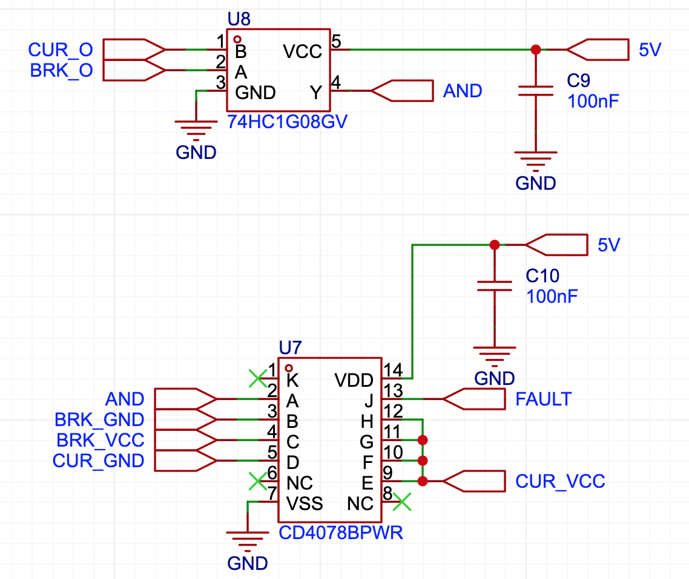
TSAL Red (Tractive System Active Light Red)
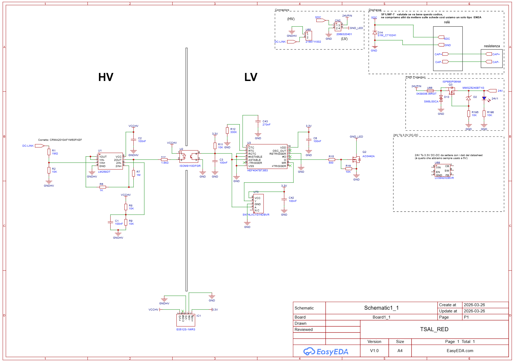
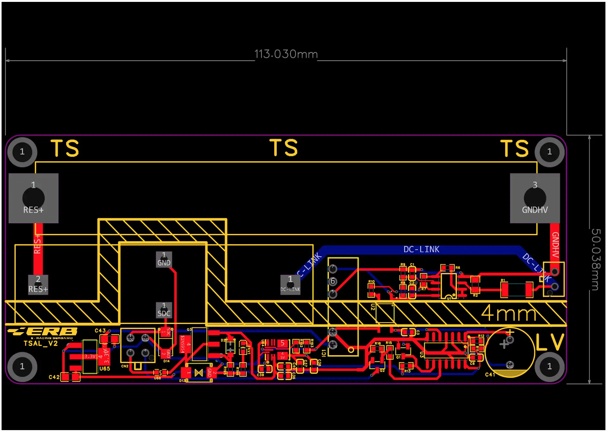
La regola FSAE dice che il TSAL deve lampeggiare di rosso ogni volta che la tensione fuori dall'accumulatore nel DC-Link supera i 60V. Il circuito fa esattamente questo:
- La tensione del
DC-LINKviene divisa da quel partitore resistivo gigantesco all'ingresso (R1da 1 MegaOhm eR2da 10kOhm). - L'operazionale
U1(LM258) confronta questo valore con un riferimento. Se la tensione è maggiore di 60V, l'uscita va alta. - Il segnale attraversa la barriera di isolamento
U2e sveglia l'oscillatore astabileU3(HEF4047), che inizia a far lampeggiare il LED tramite il mosfetQ2.
Durante la frenata, il dc bus si alza di voltaggio ma il partitore continua a fare il suo lavoro, se c'è alta tensione che gira lui inizia a lampeggiare e basta.
Emma, Precarica, Accumulator Light, TSAL green
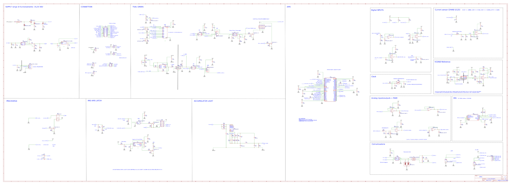
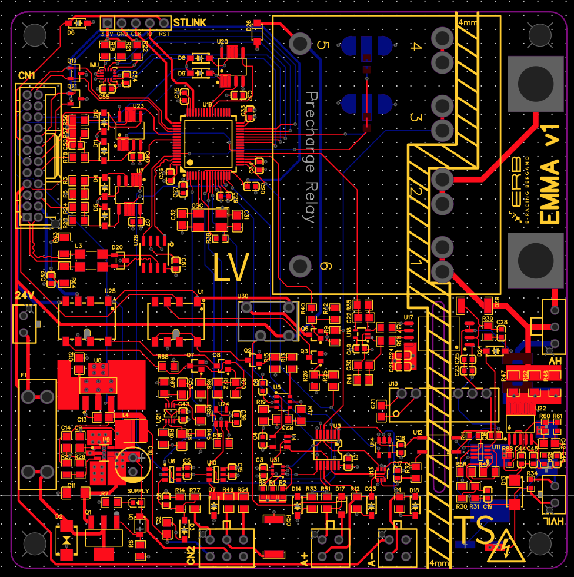
Emma è un insieme di schede di sicurezza unite con lo scopo di risparmiare spazio e componenti, in particolare non abbiamo più bisogno di duplicare i regolatori di tensione a 5V. Emma contiene anche una sezione con un microcontrollore che si occupa di verificare che schede di sicurezza falliscono e di recuperare le informazioni dai moduli BMS. Quelle più rilevanti per questa analisi sono:
- La precarica
- Luce accumulatore
- TSAL Green
- Sensore di corrente
Sensore di corrente

Questo è un sensore ad effetto Hall bidirezionale (il DHAB S/125). Invece di avere lo zero a 0V, ha lo zero a metà scala (2.5V).
- In accelerazione con corrente positiva, la tensione sale verso i 4.5V.
- In frenata rigenerativa con corrente negativa, la tensione scende semplicemente sotto i 2.5V verso gli 0.5V.
Accumulator light
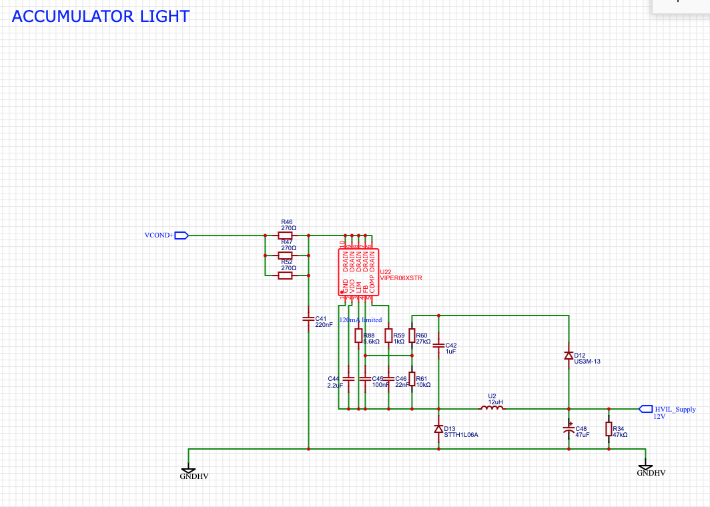
Serve ad avvisare gli operatori che il pacco è in tensione. Per via della presenza del Viper che scala la tensione fino agli 800V, non c'è bisogno di preoccuparsi, può reggere una tensione leggermente più alta sul DC Bus.
Precharge e TSAL Green
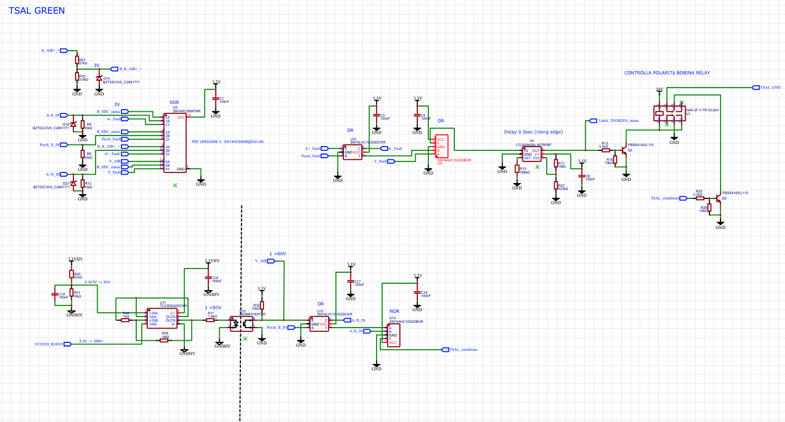
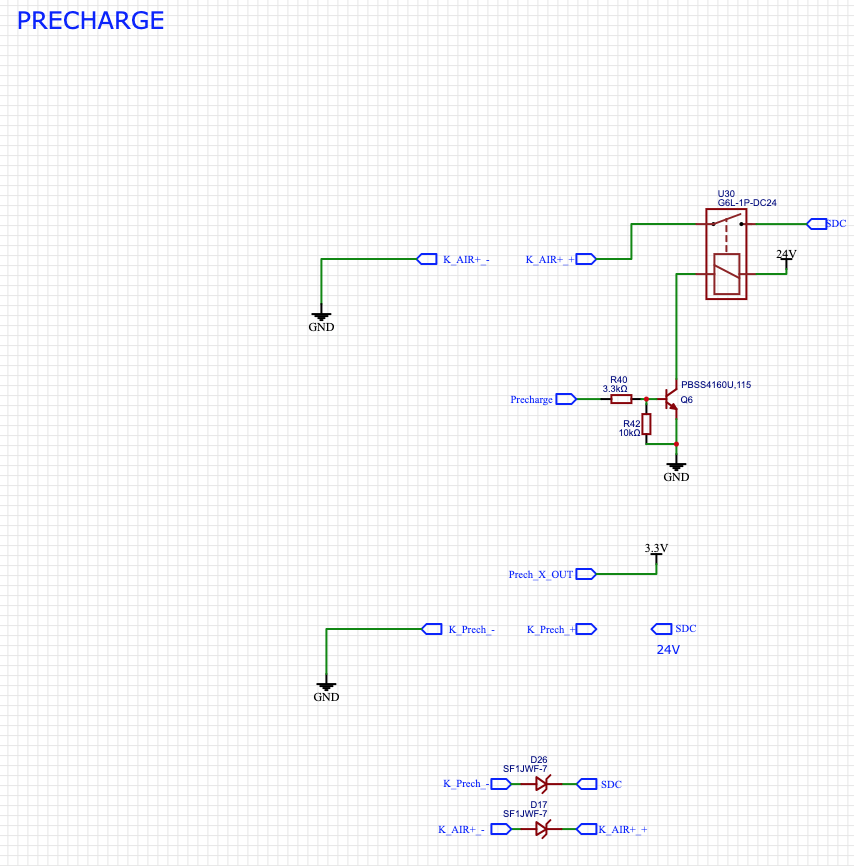
Queste due schede sono totalmente inerti ad una corrente inversa, in quanto lavorano con segnali analogici a bassa tensione e non guardano il verso della corrente.
Analisi impatto su energia e batterie
Tutto parte dall'energia cinetica posseduta dalla vettura. Quando il pilota frena prima di una curva, passando da una velocità \(v_i\) a una velocità \(v_f\), la variazione di energia cinetica da smaltire è:
In una vettura non elettrificata, il 100% di questa \(\Delta E_k\) viene trasformato in calore dai dischi freno. Nel nostro caso, cerchiamo di intercettarne il più possibile. L'energia cinetica deve attraversare diverse conversioni prima di diventare energia chimica nella batteria. Ogni passaggio ha una sua efficienza \(\eta\):
- Efficienza Meccanica \(\eta_{mech}\): Attriti degli pneumatici, giunti e cascata di ingranaggi del riduttore. Circa \(90\% - 95\%\)
- Efficienza del Motore \(\eta_{motor}\): Perdite nel ferro per via di correnti parassite e nel rame per effetto Joule mentre funziona da generatore. Circa \(90\% - 95\%\)
- Efficienza dell'Inverter \(\eta_{inv}\): Perdite di commutazione e conduzione nei MOSFET/IGBT durante il raddrizzamento attivo e boost. Circa \(95\% - 97\%\)
- Efficienza di Carica della Batteria \(\eta_{batt}\): Resistenza interna delle celle e reazioni chimiche. Circa \(90\% - 95\%\)
L'efficienza totale rigenerativa è il prodotto di tutte queste:
Questo significa che nel migliore dei casi per ogni \(100\text{ J}\) di energia cinetica sottratta alla vettura, ne immagazziniamo circa \(70\text{ J}\) nell'accumulatore.
In endurance lunga 22km, saremmo in grado di recuperare circa il 10%-15% dell'energia consumata, facendoci prendere un po' di punti e permettendoci, in futuro, di sottodimensionare il pacco batterie, rendendolo più leggero.
Impatto sulla vita utile
Dal punto di vista della batteria, la frenata rigenerativa è a tutti gli effetti una Ricarica Ultra-Rapida (Ultra-Fast Charge) a impulsi. Iniettare 20, 30 o 50 kW in pochi secondi è uno stress massiccio per le celle agli ioni di litio, che porta a due criticità principali:
A. Lo stress termico (Effetto Joule)
Ogni cella ha una Resistenza Interna \(R_{int}\). L'enorme corrente di ricarica in ingresso genera calore secondo la formula \(P_{loss} = R_{int} \cdot I^2\). Poiché la corrente è elevata e al quadrato, il pacco batterie si scalda rapidamente durante le staccate più violente, richiedendo un sistema di raffreddamento dimensionato non solo per l'accelerazione, ma anche per il regen.
B. Il Lithium Plating
Questa è la principale causa di degrad legata al regen.
Durante la ricarica, gli ioni di litio devono viaggiare dal catodo all'anodo e intercalarsi nella struttura in grafite. Se la corrente di regen è troppo alta, o se le celle sono troppo fredde, gli ioni non fanno in tempo a intercalarsi e si accumulano sulla superficie dell'anodo, trasformandosi in Litio Metallico solido (Plating).
Questo comporta:
- Perdita irreversibile di capacità
- Rischio di cortocircuiti interni
Per evitare di distruggere le batterie, il emma calcolerà e invierà in tempo reale il Charge Current Limit (CCL). Il software usa mappe che incrociano la temperatura e il SoC:
- Se la batteria è fredda < 15°C \(\to\) Il CCL viene azzerato
- Se la batteria è vicina al 100% SoC \(\to\) Il CCL viene azzerato
- Se le temperature sono ottimali e il SoC è < 80% \(\to\) Il CCL è al massimo, permettendo la piena rigenerazione.